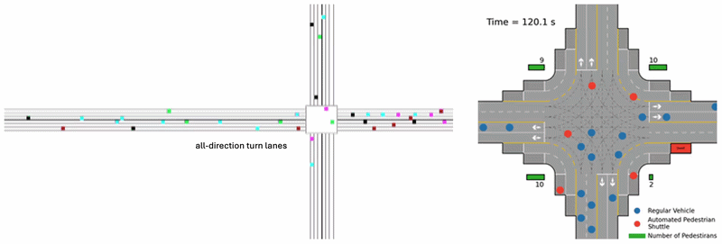
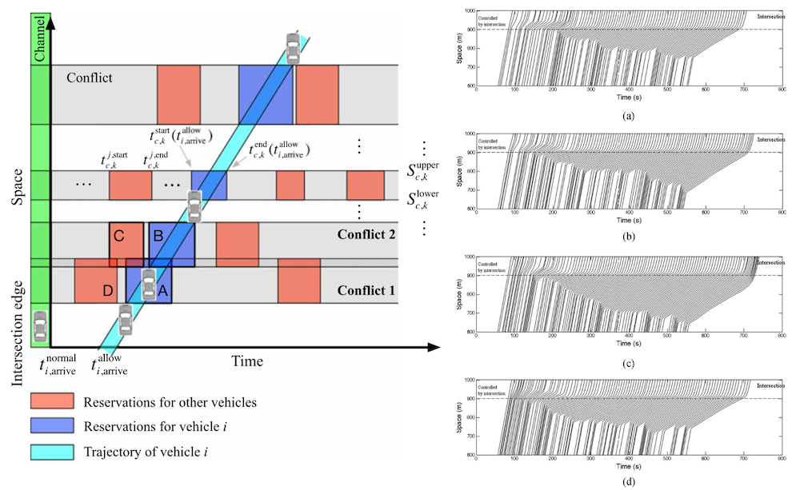
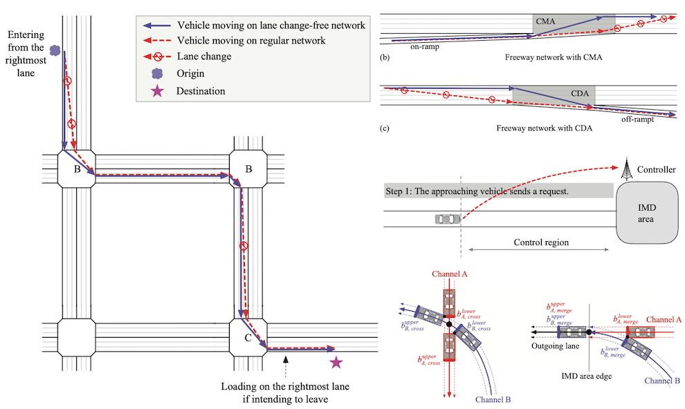
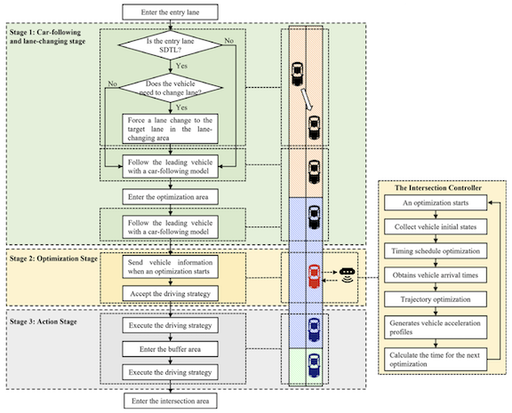
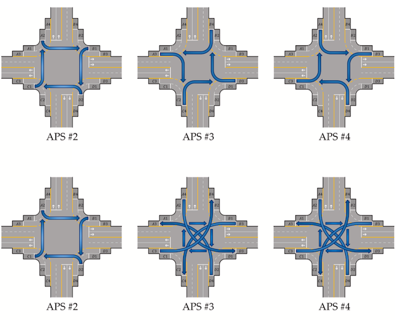
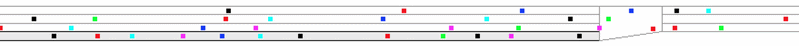

Autonomous Intersection
Overview
(Signal-free/Cooperative) autonomous intersections use vehicle connectivity, automated driving, and centralized coordination to organize how vehicles move through an intersection without relying on conventional traffic signals. By jointly scheduling vehicle entry times, routes, and trajectories, they can resolve movement conflicts while allowing connected and autonomous vehicles to pass safely with fewer stops.

Our work develops the autonomous-intersection concept through the four following studies:
- We first introduced the concept of an autonomous intersection with all-direction turn lanes in 2018, allowing autonomous vehicles to turn from any approach lane to any downstream lane and thereby reducing the need for lane changes on roads. A conflict-avoidance coordination method guides approaching vehicles through the intersection safely and efficiently[1].
- We further developed the vision of a lane change-free road transportation system through cooperative driving, including intersections, on- and off-ramps. In the future, vehicles can reach their destination without making any on-road lane changes[2].
- We systematically compared all-direction and specific-direction turn-lane designs using a two-stage framework for entry-time scheduling and trajectory optimization, together with a Monte Carlo Tree Search solution for high traffic demand. The results clarify when flexible all-direction lanes improve efficiency and when conventional lane assignments provide greater fault tolerance[3].
- We extended it to pedestrian mobility by designing an automated pedestrian shuttle service. Demand-responsive route planning, vehicle scheduling, trajectory optimization, and a rolling-horizon strategy enable pedestrians to cross safely while preserving continuous vehicle flow and imposing only minor delays on main-lane traffic[4].
Publications

[1]Erasing Lane Changes From Roads: A Design of Future Road Intersections

[2]Cooperative Driving and a Lane Change-Free Road Transportation System

[3]Is All-Direction Turn Lane a Good Choice for Autonomous Intersections? A Study of Method Development and Comparisons

[4]Pedestrian Shuttle Service Optimization for Autonomous Intersection Management
